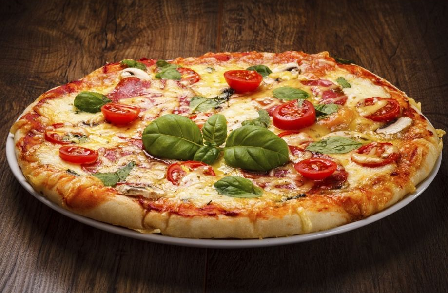
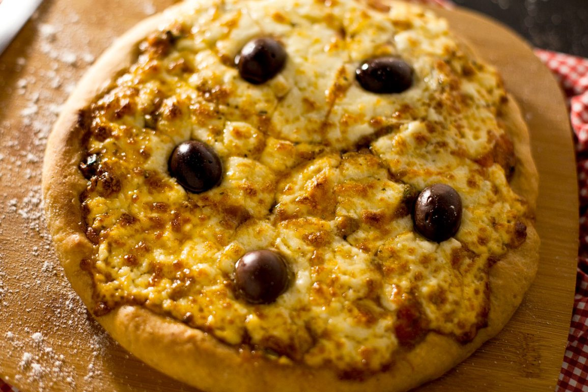
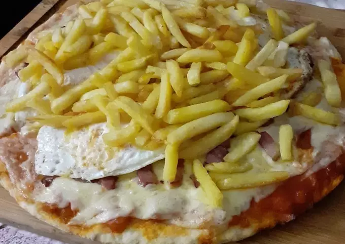

Pizza Club
Variedades de pizzas

|
4 quesosLa pizza cuatro quesos es una deliciosa y cremosa pizza que se caracteriza por tener una mezcla de cuatro tipos diferentes de quesos en su cubierta. Esta pizza comienza con una base de salsa de tomate, sobre la cual se colocan generosas porciones de queso mozzarella, queso gorgonzola, queso parmesano y queso provolone.
|
NapolitanaLa pizza napolitana es una de las pizzas más famosas y tradicionales de la cocina italiana. Esta pizza se caracteriza por su delgada masa crujiente, cubierta con una generosa cantidad de salsa de tomate y adornada con ingredientes frescos y sabrosos.
|
 |
|  |
ProvoloneLa pizza provolone es una deliciosa pizza que tiene como protagonista al queso provolone. Esta pizza comienza con una masa de pizza tradicional, que se cubre con una generosa cantidad de salsa de tomate y se cubre con rodajas de queso provolone.
|
A CaballoLa pizza a caballo es una deliciosa variación de la pizza clásica que se caracteriza por incluir un huevo frito en la parte superior. Esta pizza comienza con una masa de pizza tradicional, que se cubre con una generosa cantidad de salsa de tomate y queso mozzarella.
|
 |
Nosotros
Somos una cadena de restaurantes con especialidad en pizzas. Nuestras puertas se abrieron en el año 1992 en la ciudad de Córdoba, con nuevas propuestas y servicios.
En la actualidad contamos con 6 restaurantes, 5 en Córdoba y 1 en Catamarca, cada uno transmite los valores y calidad en las comidas que nos caracterizan.
Desde que abrimos nuestras puertas por primera vez en 1992, han cambiado muchas cosas. La ciudad ha cambiado, la manera de disfrutar la gastronomía ha cambiado, nosotros hemos cambiado. Sin embargo, hay cosas que se mantienen intactas.
Son aquellos ingredientes que no están escritos en ninguna receta, pero que son fundamentales para que la propuesta llegue a cada una de las personas que nos visitan, tal como la queremos transmitir.
Ahora que ya conoces nuestros ingredientes secretos, te invitamos a disfrutar de nuestra propuesta.